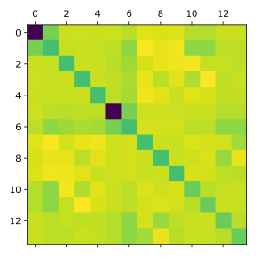

Nuclear Attraction Integrals
The next type of integrals we shall examine are the nuclear attraction integrals. A nuclear attraction integral between two basis functions and centered at and , respectively, and with respect to a nucleus is defined as where is the nuclear charge of . Just like overlap integrals, we shall at first calculate the nuclear attraction integrals between 2 s-orbitals, i.e. , For notational simplicity, we will define . Integrals involving higher angular momenta can then be obtained by applying recursive relations of Hermite Gaussians.
However, unlike the overlap integrals, nuclear attraction integrals are not factorizable because of the factor . Therefore, we have to use some tricks.
Evaluation of
Remember the 1D Gaussian integral If we choose (and change the integration variable to ), we obtain This means we can rewrite the factor as Substituting this back into the nuclear attraction integral, we get We have thus transformed the original 3-dimensional integral into a 4-dimensional integral. Wait what? Shouldn’t we simplify the expressions instead of complicating them? Well, the new integral does not have the annoying factor and is now separable.
We at first apply Gaussian product theorem to , which gives us with , , and . The 4-dimensional integral is then The product Gaussian does not explicitly depend on vector , but only the length . Therefore, it is a 1D Gaussian and we can apply Gaussian product theorem to it and the Gaussian in to obtain with . Note that we have assumed that Fubini’s theorem holds. The vector is just like for our first product Gaussian, but its exact form is not important, because it just represents a constant translation in and we are going to integrate over the whole space anyway.
The integral over is now just a 3D Gaussian integral and we already know the result. By inserting it, a one-dimensional remains: We have used the symmetry of the remaining Gaussian to change the integration limits to and . To “solve” this integral, we introduce a new variable , whose differential is
By performing this substitution, the integral becomes Note that the integral limits are changed to and upon substitution. The remaining integral, unfortunately, cannot be solved analytically. We thus introduce the Boys function: with which the original integral can be written as
Although the last expression we derived does not have any integral signs, the Boys function is still an integral. So what did we achieve? We started from a 3-dimensional integral over the whole space and could reduce it to a 1-dimensional integral over the interval . This is a huge simplification since such 1D integrals can be efficiently approximated using techniques like series expansion.
Substituting all variables back, we obtain the final expression for :
Evaluation of arbitrary nuclear attraction integrals
We can now obtain the nuclear attraction integral between Hermite Gaussians of arbitrary angular momenta by utilizing its definition through derivatives: The dependency on nuclear coordinates and comes from the exponential part as well as the Boys function. While we already know how to differentiate the exponential part, we still need to find derivatives of the Boys function. We start by taking the derivative of the Boys function directly using its definition:
Although we were not able to get something simpler through differentiation, at least the expression does not get more complicated and we still only have to evaluate Boys function numerically.
Now we can differentiate with respect to and according to the desired angular momenta to obtain arbitrary nuclear attraction integrals between Hermite Gaussians. To obtain nuclear attraction integrals between Cartesian Gaussians, , we simply use Hermite Gaussian expansion:
Although we have now derived a general expression for nuclear attraction integrals, the expressions are everything but simple. It would be a nightmare if you had to evaluate them by hand. So let us use SymPy to generate the formulae symbolically and let the computer do the work for us.
Code Generation
Again, we start by importing the necessary modules, including our function
for calculating Hermite expansion coefficients. It is assumed here that
this function is called get_ckn and located in the file hermite_expansion.py.
import sympy as sp
from sympy.printing.numpy import NumPyPrinter, \
_known_functions_numpy, _known_constants_numpy
import os
from hermite_expansion import get_ckn
Afterwards, we define some symbols for SymPy. Since we are now dealing with 3-dimensional Gaussians, we need a bit more symbols than before.
# Initialisation of symbolic variables
alpha, beta = sp.symbols('alpha beta', real=True, positive=True)
AX, AY, AZ = sp.symbols('A_x A_y A_z', real=True)
BX, BY, BZ = sp.symbols('B_x B_y B_z', real=True)
CX, CY, CZ = sp.symbols('C_x C_y C_z', real=True)
Because the Boys function is not (yet) implemented in SymPy, we have to do it ourselves:
class boys(sp.Function):
@classmethod
def eval(cls, n, x):
pass
def fdiff(self, argindex):
return -boys(self.args[0] + 1, self.args[1])
We have left out the eval method because we will never use SymPy to
evaluate Boys functions, for which this method is needed. The fdiff method,
however, is important, because it tells SymPy how to evaluate derivatives of
Boys functions.
Now we can define :
# Nuclear attraction for (i, j, k) = (l, m, n) = (0, 0, 0)
PX = (alpha * AX + beta * BX) / (alpha + beta)
PY = (alpha * AY + beta * BY) / (alpha + beta)
PZ = (alpha * AZ + beta * BZ) / (alpha + beta)
RPC = (CX - PX)**2 + (CY - PY)**2 + (CZ - PZ)**2
V_00 = ((2 * sp.pi) / (alpha + beta)) \
* sp.exp(-alpha * beta *
((AX - BX)**2 + (AY - BY)**2 + (AZ - BZ)**2) / (alpha + beta)) \
* boys(0, (alpha + beta) * RPC)
V_00 = sp.simplify(V_00)
Because we have to work with all three components of angular momentum, it would be very wasteful to iterate over all indices independently. Suppose we want to calculate the nuclear attraction integrals for just s- and p-orbitals, which means that the maximum angular momentum is 1. If we iterate over , , and independently from 0 to 1, we will end up with orbitals with , which is definitely not s- or p-orbital. Because the symbolic generation of nuclear attraction integrals can be rather time-consuming, we want to avoid such unnecessary calculations. Furthermore, because we want to calculate the integrals for Cartesian Gaussians using a linear combination of integrals for Hermite Gaussians, with the latter required multiple times during the calculation, it can be helpful to store them at first in a dictionary. To achieve both goals, we define the following functions:
def generate_triple(ijk):
new = [ijk[:] for _ in range(3)]
for i in range(3):
new[i][i] += 1
return new
def generate_derivative(expr, var):
return sp.factor_terms(sp.diff(expr, var))
def generate_tree(lmax, der_init, var):
ijk = [[0, 0, 0]]
derivatives = [der_init]
ijk_old = ijk[:]
derivatives_old = derivatives[:]
for _ in range(lmax):
ijk_new = []
derivatives_new = []
for item, expr in zip(ijk_old, derivatives_old):
new_ijk = generate_triple(item)
for index, n in enumerate(new_ijk):
ijk.append(n)
ijk_new.append(n)
new_der = generate_derivative(expr, var[index])
derivatives.append(new_der)
derivatives_new.append(new_der)
ijk_old = ijk_new[:]
derivatives_old = derivatives_new[:]
return ijk, derivatives
Now we can proceed to the generation of nuclear attraction integrals, starting with Hermite Gaussians:
LMAX = 1
ijk, dijk = generate_tree(LMAX, V_00, (AX, AY, AZ))
ijklmn = []
derivatives_ijklmn = []
for i, d in zip(ijk, dijk):
lmn, dlmn = generate_tree(LMAX, d, [BX, BY, BZ])
for j, e in zip(lmn, dlmn):
ijklmn.append(i + j)
derivatives_ijklmn.append(e)
derivatived_dict = {
tuple(item): deriv for item, deriv in zip(ijklmn, derivatives_ijklmn)
}
Now we can easily generate nuclear attraction integrals between two Cartesian Gaussians with arbitrary angular momenta:
def get_single_nuclear_attraction(i, j, k, l, m, n, ddict):
vint = 0
for o in range(i + 1):
for p in range(j + 1):
for q in range(k + 1):
for r in range(l + 1):
for s in range(m + 1):
for t in range(n + 1):
vint += get_ckn(o, i, alpha) * \
get_ckn(p, j, alpha) * \
get_ckn(q, k, alpha) * \
get_ckn(r, l, beta) * \
get_ckn(s, m, beta) * \
get_ckn(t, n, beta) * \
ddict[(o, p, q, r, s, t)]
vint = sp.factor_terms(vint)
return vint
After defining some repeated expressions for substitution, we can finally generate all nuclear attraction integrals between two Cartesian Gaussians up to a maximum angular momentum:
# Substitute repeated expressions
P, Q, R_AB, P_RPC = sp.symbols('p q r_AB p_RPC', real=True)
subsdict = {
alpha + beta: P,
alpha * beta: Q,
(AX - BX)**2 + (AY - BY)**2 + (AZ - BZ)**2: R_AB,
(
(-AX * alpha - BX * beta + CX * (alpha + beta))**2
+ (-AY * alpha - BY * beta + CY * (alpha + beta))**2
+ (-AZ * alpha - BZ * beta + CZ * (alpha + beta))**2
) / (alpha + beta): P_RPC,
}
v_ij = {}
for key in derivatived_dict:
print(key)
vint = get_single_nuclear_attraction(*key, derivatived_dict)
v_ij[key] = vint.subs(subsdict)
Again, we want to write a function to export the generated expressions to a Python file:
def write_nuclear_attractions_py(nuclear_attractions, printer, path=''):
with open(os.path.join(path, 'V.py'), 'w') as f:
f.write('import numpy as np\n')
f.write('from scipy.special import hyp1f1\n')
f.write('\n\n')
f.write('def boys(n, t): \n')
f.write(' return hyp1f1(n + 0.5, n + 1.5, -t)'
' / (2.0 * n + 1.0)\n')
f.write('\n\n')
f.write('def v_ij(i, j, k, l, m, n, alpha, beta, A, B, C):\n')
# Calculate repeated expressions
f.write(' p = alpha + beta\n')
f.write(' q = alpha * beta\n')
f.write(' AB = A - B\n')
f.write(' r_AB = np.dot(AB, AB)\n')
f.write(' P = (alpha * A + beta * B) / p\n')
f.write(' PC = P - C\n')
f.write(' p_RPC = p * np.dot(PC, PC)\n')
f.write(' A_x, A_y, A_z = A\n')
f.write(' B_x, B_y, B_z = B\n')
f.write(' C_x, C_y, C_z = C\n')
f.write('\n')
# Write integrals
for i, (key, value) in enumerate(nuclear_attractions.items()):
if i == 0:
if_str = 'if'
else:
if_str = 'elif'
code = printer.doprint(value)
f.write(' {} (i, j, k, l, m, n) == ({}, {}, {}, {}, {}, {}):\n'
.format(if_str, *(str(k) for k in key)))
f.write(f' return {code}\n')
f.write(' else:\n')
f.write(' raise NotImplementedError\n')
Because we import NumPy with the alias np, we set up a NumPyPrinter to convert
the symbolic expressions into Python code with functions beginning with this
alias:
_numpy_known_functions = {k: f'np.{v}' for k, v
in _known_functions_numpy.items()}
_numpy_known_constants = {k: f'np.{v}' for k, v
in _known_constants_numpy.items()}
printer = NumPyPrinter(settings={'allow_unknown_functions': True})
printer._module = 'np'
printer.known_functions = _numpy_known_functions
printer.known_constants = _numpy_known_constants
Because we need the function boys which is known to NumPy, we have to
set the option allow_unknown_functions to True. It is now our
responsibility to ensure that all the other functions are supported by
NumPy or native Python.
Finally, we can generate the Python file with all the integral expressions:
MY_PATH = '.'
write_nuclear_attractions_py(v_ij, printer, path=MY_PATH)
This will generate a file called V.py with the integrals we want.
Testing on Molecules
In order to test our generated expressions for nuclear attraction integrals,
we have to extend our Gaussian class and Molecule class to accommodate
this. For the Gaussian class, we extend it with the VC method:
import V
def VC(self, other, RC):
"""
Calculate the nuclear attraction integral between this Gaussian and
another Gaussian function.
Parameters:
other (Gaussian): Another Gaussian function.
RC (array-like): The coordinates of the nucleus.
Returns:
float: The nuclear attraction integral value.
"""
v_en = 0.0
for ci, alphai, normi in zip(self.coefs, self.exps,
self.norm_const):
for cj, alphaj, normj in zip(other.coefs, other.exps,
other.norm_const):
v_en += ci * cj * normi * normj * V.v_ij(
self.ijk[0], self.ijk[1], self.ijk[2],
other.ijk[0], other.ijk[1], other.ijk[2],
alphai, alphaj, self.A, other.A, RC,
)
return v_en
We can then use this method to extend our Molecule class with two methods
to calculate nuclear attraction integrals:
def get_Vij(self, i, j) -> float:
v_int = 0.0
for at in self.atomlist:
v_int -= at.atnum \
* self.basisfunctions[i].VC(self.basisfunctions[j], at.coord)
return v_int
def get_V(self) -> None:
nbf = len(self.basisfunctions)
self.Ven = np.zeros((nbf, nbf))
for i in np.arange(nbf):
for j in np.arange(i, nbf):
self.Ven[i, j] = self.get_Vij(i, j)
self.Ven[j, i] = self.Ven[i, j]
With the extended classes in hand, we can test our generated expressions on an example molecule, say, ethene. You can download the xyz-file for ethene from here.
After importing the necessary modules, we
load the molecule from an xyz-file and calculate the nuclear attraction
integrals using the method get_V():
import matplotlib.pyplot as plt
from molecule import Molecule
ethene = Molecule()
ethene.read_from_xyz('ethene.xyz')
ethene.get_basis('sto-3g')
ethene.get_V()
nuclear_attractions = ethene.Ven
Instead of printing the individual integrals, we can visualise the whole matrix using a heatmap:
fig, ax = plt.subplots(figsize=(4, 4))
ax.matshow(nuclear_attractions)
fig.tight_layout()
plt.show()
This should give you the following plot:

Information for quantum chemistry enthusiasts
You can install the open-source quantum chemistry package PySCF on your PC, which provides a Python interface for molecular integrals, as well as Python implementations of many quantum chemical methods. Unfortunately, PySCF does not support Windows natively, so you have to use Windows Subsystem for Linux if you are a Windows user.
The installation and usage of PySCF is not neccessary for this lecture, you can but do not have to do it. But once you have installed PySCF, you can use the following code to calculate the nuclear attraction integrals using PySCF and compare them with our results:
import numpy as np
from pyscf import gto
mol = gto.M(atom='ethene.xyz', basis='sto-3g')
nuclear_attractions_pyscf = mol.intor("int1e_nuc", hermi=1)
print(np.allclose(nuclear_attractions, nuclear_attractions_pyscf))